脑袋开了花，城市发了芽 | Digbijayee Khatua
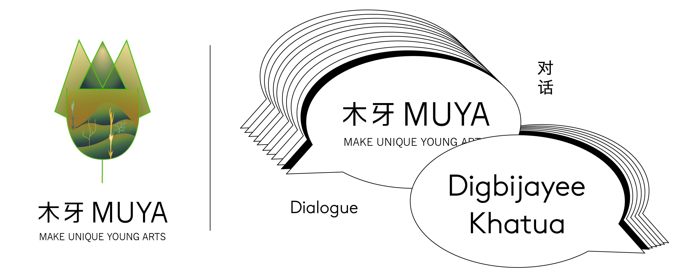欢迎来到木牙Make Unique Young Arts，让我们来探索微缩的城市山脉～
人类需要生活，城市就需要发展或者说城市会因为人类的扩散而扩散。慢慢的我们发现树林因为城市的发展一点一点的萎缩了，就像我们身体的器官伴随着年龄的增长，精神的压力，不断的挣扎。而那些不断扩充的大楼形成了新的山脉——城市山脉。
People need a life and the city needs to develop. The size of the city is decreasing because of the spread of people. Gradually, we find that the trees are shrinking bit by bit due to the development of the city which is similar to our body organs are constantly struggling with age and mental pressure. Those expanding buildings form a new mountain range - the City Range.
和其他传扬保护环境的艺术家不同的是 Digbijayee Khatua，来自印度的他从生活，文化，人际关系，和帕塔(Patta)风格（印度传统绘画）等多重角度描绘下了他的城市山脉。
Unlike other artists who preach environmental protection, Digbijayee Khatua. He is from India and describes urban mountain ranges from multiple perspectives which include life, culture, relationships, and Patta (traditional Indian painting)style.
他对于不同类别的媒介尝试的勇气和热情也同样吸引了我们。我们有幸邀请到了Digbijayee Khatua来到木牙MUYA。和大家一起倾听他对于不同文化，时代变迁带来思想上和生活上的印象，创作初衷，生活感悟，以及对于作品思想的讲解。
His courage and enthusiasm for experimenting with different kinds of media fascinate us. We are very lucky to have Digbijayee Khatua here in MUYA. Let's listen to his perception of different cultures, his impression of thoughts and life brought by the changes of times, his original intention of creation, his perception of life, and his explanation of the thoughts of his works.
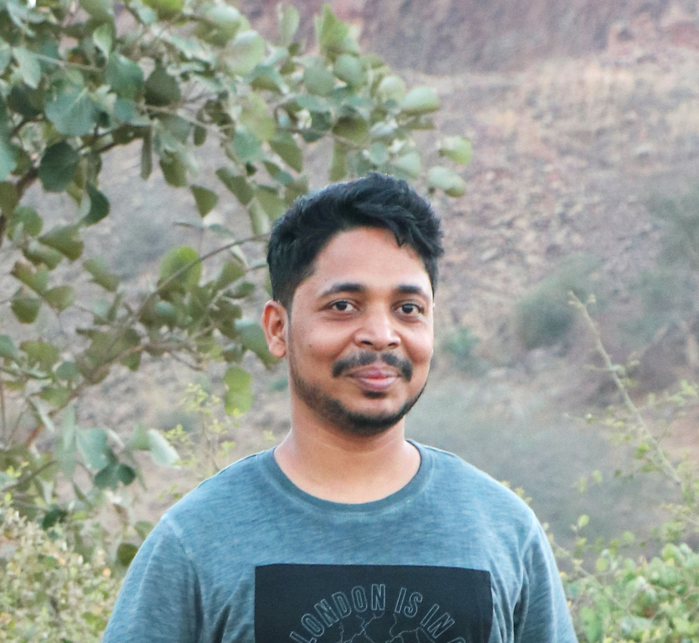
Digbijayee Khatua
Digbijayee Khatua 于2015年在新德里大学艺术学院获得艺术硕士学位，2012年在B. K.艺术与工艺学院, （Bhubaneshwar, Odisha） 获得视觉艺术学士学位。最近，获得了一些奖学金，奖项。在印度和国外的团体展览。2015-2016年获得Lalit Kala 学院研究资助奖学金在新德里的Garhi工作室。目前工作和生活在新德里。
Digbijayee Khatua
Digbijayee Khatua received a Master’s degree in Fine Arts in 2015 from the College of Art, Delhi University, New Delhi, and a Bachelor’s degree in Visual Arts in 2012 from B. K. College of Art and Crafts, Bhubaneshwar, Odisha and. Most recently, He has received some Scholarships, awards, and group exhibitions in India and abroad. Research Grant Scholarship Lalit Kala Academy, Garhi Studio, New Delhi, 2015-2016. and currently based in New Delhi.


我以时间、孤立和过渡作为作品的共同主题，我对人际关系的脆弱以及人们试图共存和相互联系时的尴尬感兴趣。为了达到这个目的，我创造了像微缩一样的细节，作为不断进化的静物，我用它来绘制详细的叙事性绘画。在我最近的一系列绘画中，我建立了一个虚构的乡村景观的透视模型，并逐渐将其发展成农田，最终成为一个城镇。从一块方形聚苯乙烯泡沫开始，我雕刻了山脉、山谷、河流和池塘，用钢丝和泡沫树繁殖出一片翠绿的景观。
Working with common themes such as time, isolation, and transition, I am interested in the fragility of relationships and people’s awkwardness in trying to coexist and relate to one another. To that end, I create miniature like detailing to serve as evolving still life’s from which I paint detailed narrative paintings. For my most recent series of paintings, I built a diorama of a fictional rural landscape and gradually developed it into farmland and ultimately, a town. Beginning with a square of Styrofoam, I carved mountains, valleys, rivers，and ponds, and propagated a verdant landscape with of wire and foam trees.
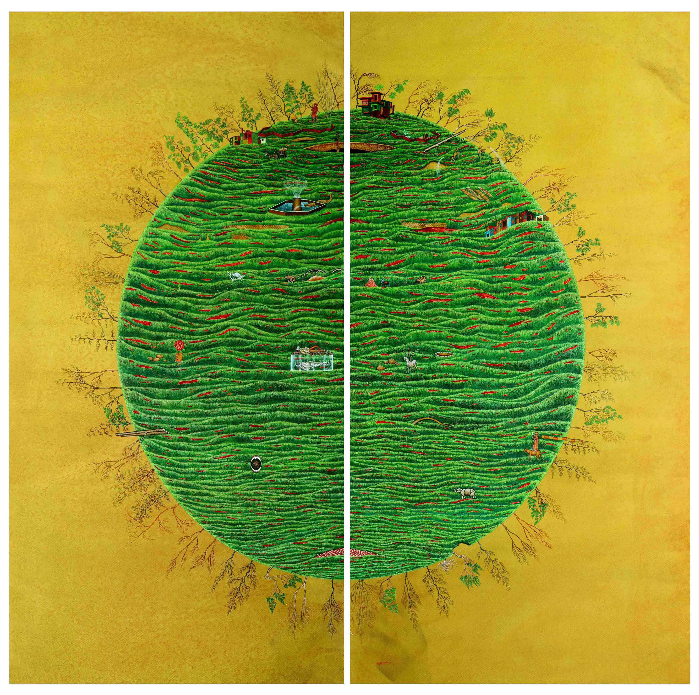
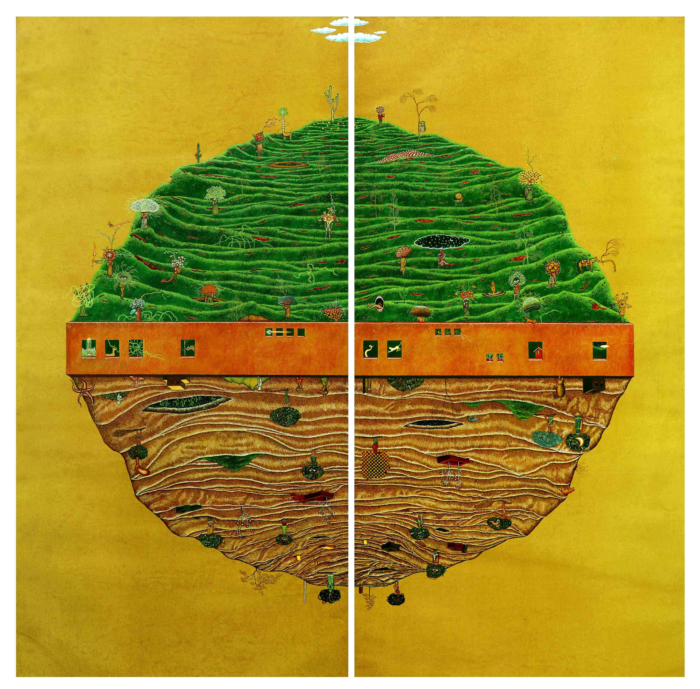

从我的家乡，印度东部的奥里萨邦艺术逗留和我目前在印度首都新德里实践的地方。
回忆起小时候的日子，那时我会陪aanganwadi(游戏学校)当老师的母亲，用贴在我们家墙上的golam（糯米粉）创造传统的图案。我的父亲是一名历史和文学老师，他参观了Odisha的古迹，那里历史和文化丰富，有寺庙、洞穴和Pattachitra（印度传统绘画）艺术风格。在所有的作品中，我们都能找到帕塔(Patta)风格的典故，在其神话般的叙事、固定的形式、浓烈的色调和花卉图案中，呈现出一种当代风格。
我从奥里萨邦(Odisha)到德里(Delhi)的转变，以及亲身经历不断变化的风景，极大地影响和标志着我的实践，这在我对真实和想象的微小细节的记录中都很明显。融合微型绘画和传统帕塔绘画(印度传统绘画)的风格元素。这一理念体现了图像阅读的价值以及机器与城市图像之间的多样性。
Artistic sojourn from my native place, state Odisha in east India and my current place of practice in New Delhi capital of India.
Village reminiscing days when I was a child and would accompany my mother, a teacher at Anganwadi (playschool), to create traditional patterns with Golam(rice powder) on the walls of our home. My father, a history and literature teacher, to ancient monuments in Odisha, a place historically and culturally rich with temples, caves, and Pattachitra (Indian traditional painting) art style. In oeuvre, one finds allusions to the Patta technique, and in its mythological storytelling, fixed form, robust hues, and floral motifs render a contemporary take on the style.
My practice is vastly influenced and marked by my shift from Odisha to Delhi and personal encounter with the ever-changing landscape, evident in my recording of minute details – both real and imagined. Fusing stylistic elements drawn from miniature paintings and the traditional Patta paintings (Indian traditional painting). The idea portrayed the value of image reading and the sense of diversity between Machine and urban pictures. In the painting, it gives the scene of man-made clouds and deserves the costume of urban.
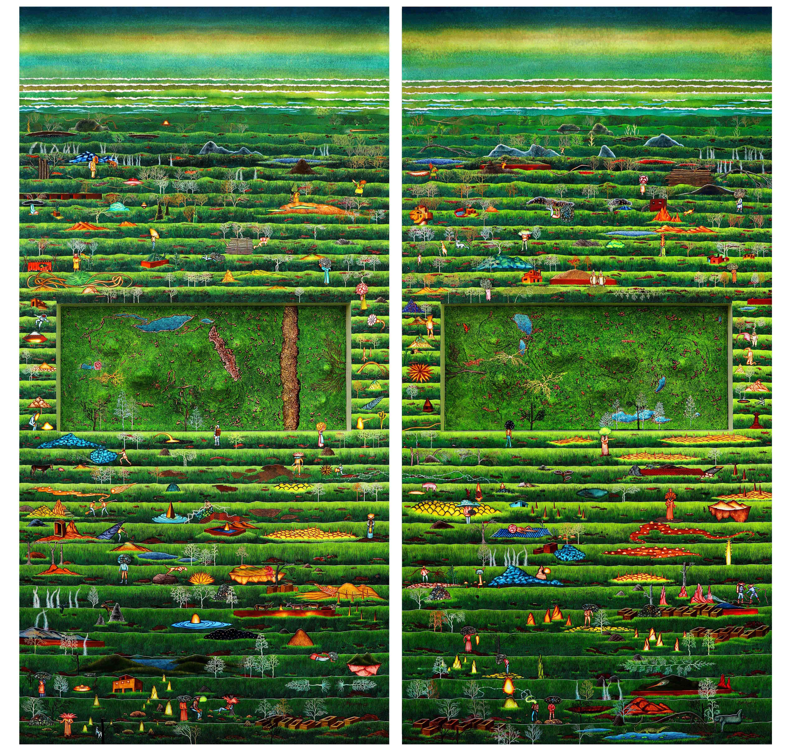

➤ 木牙MUYA:在您的画作中多次出现不同的层次分割，这些分割线是无意识出现的还是您有意为之？
There are many different levels of divisions in your paintings. Do these divisions appear unconsciously, or do you deliberately?
Digbijayee Khatua:是的，我想在工作中故意进行不同程度的划分。因为，我长大后在故乡的房屋墙壁上被民间绘画和传统图案所包围。到那时，我的灵感仅限于Orissan寺庙建筑和Patta绘画。我从奥里萨邦（Odisha）搬到德里（Delhi）接受更高学历的学习对我的实践产生了巨大的影响。在我记录微小细节的过程中，非常真实地感受到了与不断变化的城市景观的亲密接触，无论是真实的还是想象的，我的作品都融合了微型绘画和传统的帕塔绘画，并从中汲取的它们的风格元素。
Yes, I have liked to deliberately work at different levels of division in my work. Because I grew up surrounded by folk paintings and traditional motifs on the house walls of my native village. Till that time my inspirations were limited to Orissan temple architecture and Patta paintings. My practice was immensely influenced and marked by my relocation from Odisha to Delhi for my higher studies. The personal encounter with the ever-changing cityscape is very much evident in my recording of its minute details, both real and imagined which I fuse with stylistic elements drawn from miniature paintings and traditional Patta paintings.
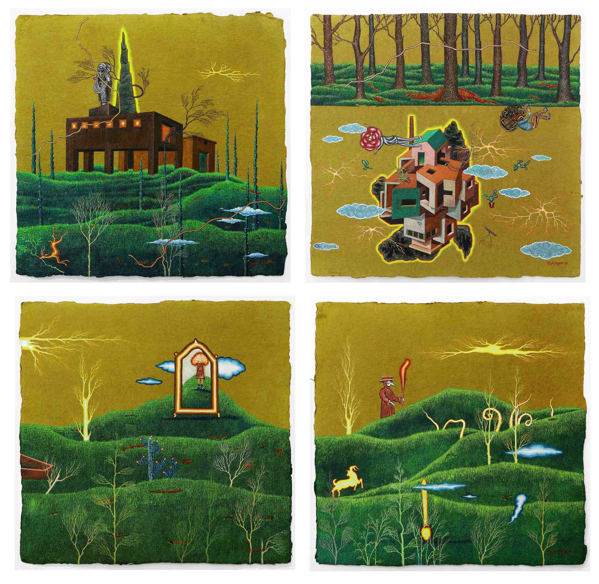
➤ 木牙MUYA:人物在您的作品中占据了很重要的地位。在您的画作中人物的头像都用花来替代，为什么要遮住人的脸庞又为什么是花呢？而在您发给我们的画 《The Fat of land》中却回归了人原有的模样，是有什么特殊的原因导致了画作的改变吗？
Characters occupy the main position in your work. In your paintings, all the heads are replaced by flowers. Why do you cover the faces, and why is the flower? But in the painting you sent to us, "The Fat of Land," it returned to the human being's original appearance. Is there any particular reason that caused the change in the painting?
Digbijayee Khatua:这是两种人的思维方式，他们的头被花和机器所取代。生活在文化之都德里（Delhi），我捕捉了一个城市的辉煌，以及我在日常生活中遇到的众多嘈杂。城市如何受到非自然元素和污染的影响，每个人都沉迷于其人造的宏伟壮丽。在我的过程中，我经常用母语（Odiya）编写一些故事，这是我的图像制作程序中不可或缺的一部分。有时，我会引用过去的人物来创作戏剧，有时，他们会提出来自社会和与我们有关的问题。
“The Fat of Land”的创作完成了锁定时间，展示了回顾传统形式的画作。类似于多层彩绘纸的精美风景实际上是水洗彩绘技术的结果。这幅画起源于在后来的阶段中通过细致而复杂的技术施加水彩画。这幅画需要很多步骤，并且需要几天到两周的时间才能完成。绘画主题的灵感是最耗时的活动，因为一个核心概念要花上几年的时间才能成为一个实际的概念。
These two different ways of the human mind, some heads replaced by flowers and some machines. living in the cultural capital Delhi, I capture the splendor of a city along with the swarm that I used to come across in my day to day living. How the city is affected by the unnatural elements and pollution, where everybody is quite indulged and fascinated to its artificial magnificence. During my process I used to compile some stories in my native language (Odiya) which is an integral part of my image-making procedure. Sometimes I bring in characters from my past to create a drama and sometimes they posit relevant questions from the society and issues concerning us at present.
“The Fat of Land” work done that lockdown time showcases format paintings looking back at the traditional forms. Beautifully landscape resembling multi-layered painted paper is actually the result of a wash painting technique. The painting originates from on which the watercolor is applied at a later stage through a meticulous and complex technique. This painting requires numerous steps and takes from a few days up to two weeks to complete. The inspiration for the subject-matters of the paintings is the most time-consuming activity though, as it takes up to a couple of years for a core idea to become an actual concept.
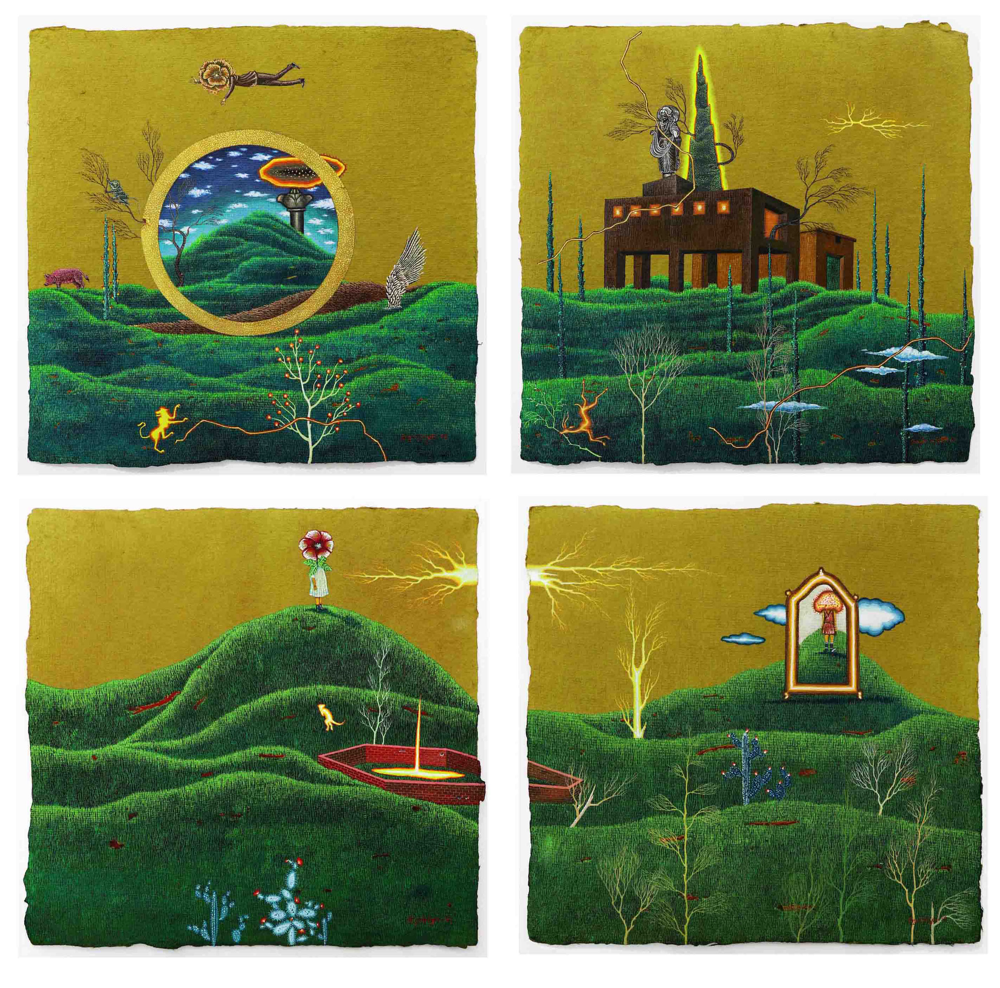
➤ 木牙MUYA:您的画作以文学和戏剧为背景和灵感，在您看来，这种叙事性的表现方式在文字，绘画甚至是影像中的表现有哪些的不同呢？
Your paintings are based on literature and drama. What do you think about the difference in narrative among writings, paintings, and films?
Digbijayee Khatua:我认为所有都是不同的媒介是与情感的关系。我一度认为自己更多来自文学和戏剧背景而不是美术；因为我父亲是文学老师和作家，因此，我的一长串艺术家，工匠，作家和电影制作人的想法和概念，都是成为我能够通过另一种方式理解周围生活的原因。它也扩大了我对当代艺术过程和方法的兴趣和实践。
I think all are different mediums but relationships with emotion. I consider myself to be more from a literature and drama background rather than fine art; because my father literature teacher with writer that’s why as such, I have a long list of ideas and concepts as an artist, artisan, writer and movie maker which in turn allows me to provide an alternative way of understanding life around me. It also widens my interest in processes and approaches in contemporary art Practice.
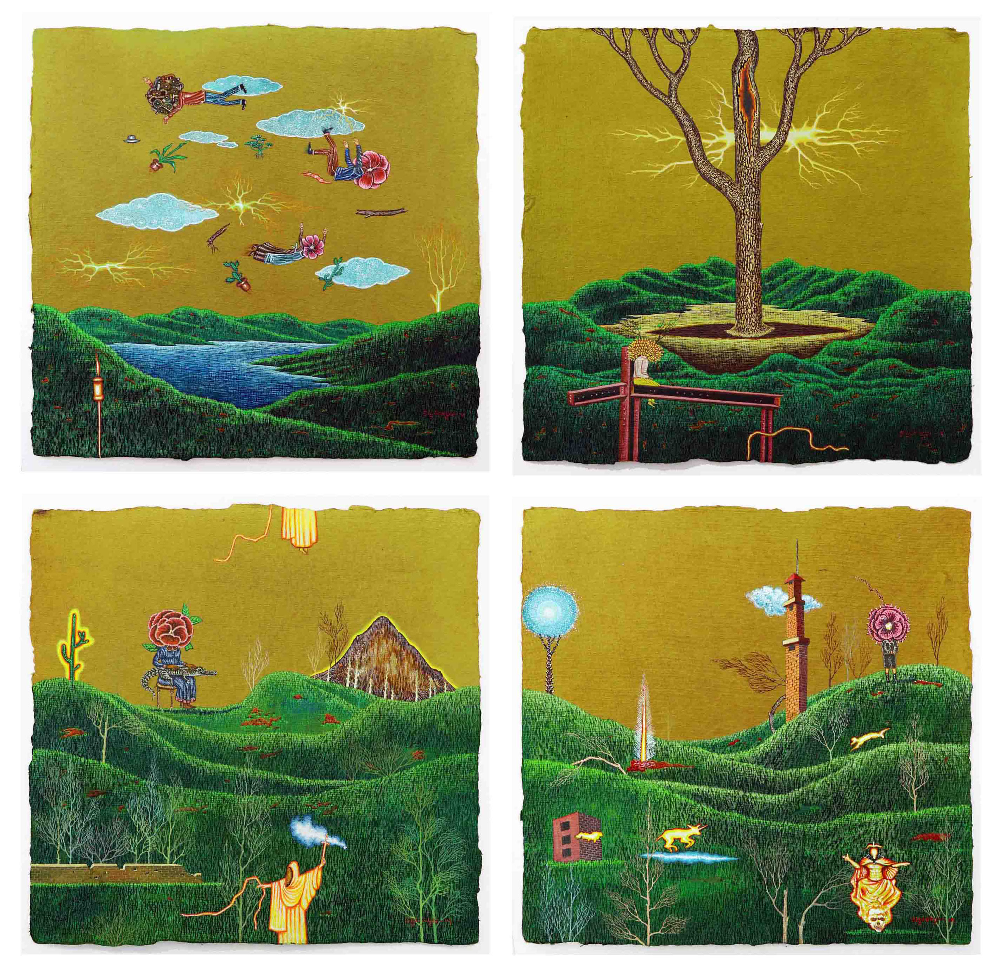
➤ 木牙MUYA:创作时的构思一定是个很重要的环节，在起草您的画作时，是如何搭建故事架构的？
When you start to paint, how did you structure from your story to paint?
Digbijayee Khatua:我在日常生活中一直观察到，城市生活如何在不自然，幻觉和污染的情况下改变的，但是每个人仍然和人造美，复杂事物和平共处。在我的作品中，绘画表面通过透视城市的各个部分呈现出各种视角和层次。我想介绍它的弊端，这些弊端正在影响我们的人类生活。与之同时，我将开发一部作品，即艺术家日记。
I have been observing in my day-to-day life, how the city life is moving with unnaturalness, illusion and pollution but everybody still feels lively with man-made beauty and complications. The pictorial surface in my works gains various perspectives and layers browsing through compartmentalized renditions of the city. I would like to present its cons, which are affecting our human lives. Along with it, side-by-side, I will be developing a work, which is the Artist Diary.
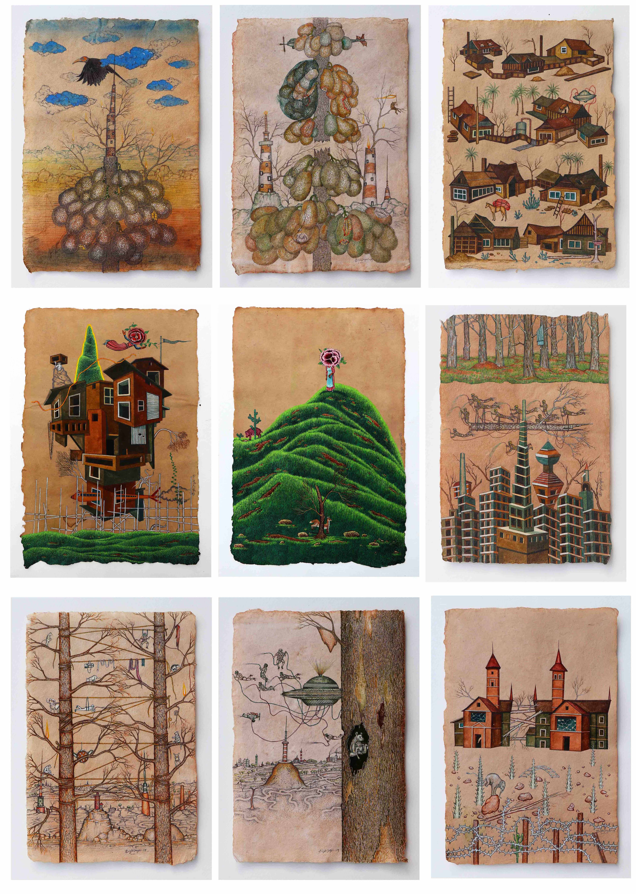
➤ 木牙MUYA:很多人常说艺术家的作品是情感的一种宣泄，请问您是怎么样看待这样大众的思想的呢？
Most people said the artist’s works are from their emotional release. I am interested in how you think about this common sense?
Digbijayee Khatua:我从小对艺术就很感兴趣。我被人们的思想和观念吸引了，这些观念，理念为我理解周围的生活提供了另外一种方式。
21世纪的当代艺术是一个新兴的实践，研究和出版的领域，使其成为令人难以置信的动态研究领域。在新世纪里，许多重要的话题引起了共鸣，并激发了新的思想和学术辩论，例如生命科学中对生物艺术的回应，以及对因增长了回应而发展起来的被称为关系美学的批判理论，它们吸引着观众参与和互动的艺术。
I was interested in art from childhood. I am attracted towards people, ideas and concepts that provide an alternate way of understanding life around me.
21st-centur contemporary art is a burgeoning field of practice, research, and publication, making it an incredibly dynamic field of study. Many important topics have been resonating in the new century and inspiring new thinking and scholarly debate, such as the surge of bio art in response to scientific research in the life sciences, and the critical theory known as relational aesthetics that developed in response to an increase in art that invites viewers’ participation and interaction.

➤ 木牙MUYA:随着我们进一步进入现代科技时代，我们变得越来越像机器。您是否有用过抖音，对于抖音您持有什么样的看法？在印度的网络传播上您觉得它作为怎么样的角色？
“ As we go further into this modern technological age, we have become more and more like machines,” what you wrote in your statement is interesting. Have you ever used TikTok, what do you think about TikTok? What kind of role do you think it plays in Indian Internet communication?
Digbijayee Khatua:在我的乡村背景下，城市生活方式和大都市的吸引力使我渴望看到城市建筑，城市景观，历史，设计，文化以及城市中平凡的日常生活。我主要受到卫生，公用事业，土地使用，住房和运输等复杂系统的影响。一个大城市或大都市通常都有相关的郊外和郊区，相互交织的关系和并置的差异相互重叠，形成了使我着迷的都市山脉。
随着我们进一步进入当代技术时代，我们变得越来越像机器。当我们做某事时，我们对工作没有任何特别的情感或依恋，我们只是继续做下去，而没有研究人类的不同方面。机器是城市居民的主要组成部分。我的想法是描绘可识别价值的图像，并评估机器和城市图片之间的差异。它承载着科学技术的美学，美丽和悲惨。
With my rural background, the appeal of the urban lifestyle and the metropolitan has instigated in me the desire to see the city architecture, its view, history, design, culture, and the mundane day to day life in a city. I'm mostly influenced by the complex systems for sanitation, utilities, land usage, housing, and transportation. A big city or metropolis usually has associated suburbs and exurbs and the interwoven relationship and juxtaposition of differences overlapping one another to form a throbbing metropolitan life that fascinates me.
As we go further into this contemporary age of technology, we have become more and more like machines. When we do something, we don't harbour any particular emotions or attachments with the work, we just go on doing it without looking into different human aspects. The Machine is a major component for the city dwellers. The idea is to portray the value discerning images and gauging the diversity between machine and urban picture. It carries the aesthetic, beauty and grisly of science and technology.

➤ 木牙MUYA:这次疫情对您的工作室和绘画是否有影响？对于您所处的行业和市场会有哪些改变？
Does the epidemic affect your studio and paintings? What changes happen to your industry？
Digbijayee Khatua:COVID-19大流行影响了各种行业和企业，艺术也不例外。对于印度的许多艺术家而言，病毒已导致演出和活动取消，并导致收入损失。
COVID-19已经迅速改变了今年所有人（包括艺术家和创意自由职业者）的生活方式及工作方式。也试图去理解由于冠状病毒而导致的艺术职业正在发生的变化。
The COVID-19 pandemic has affected all kinds of industries and businesses, and the arts are no exception. For many artists in India, the virus has caused cancelations of shows and events and led to the loss of income.
COVID-19 has already rapidly changed the way that everyone including artists and creative freelancers this year. In an effort to understand how art careers are changing due to the Coronavirus.

➤ 木牙MUYA:除了画家之外您还有在做其他的工作吗？艺术家的收入来源一直是一个难以被企及的秘密，方便讲述一下平日您是如何支持自己的艺术生涯的呢？
Are you doing any other work besides a painter? The source of the artist's income has always been a secret that is difficult to reach. It is convenient to share about how you support your art career ？
Digbijayee Khatua:不，我正作为自由职业者艺术家来完成我的作品。有些作品卖了几年，有些时候很难维持工作室租金，艺术品和家庭。我还在印度的一些画廊工作，还有一些个人艺术品收藏家在收集我的作品，并帮助我继续我的艺术创作。
No, I am doing my work as a freelancer artist. Some works are sold in years and sometimes very difficult to manage studio rent, art material and family. I have been doing work with some gallery’s in India and some personal art collectors collecting my work and helping me continue my art practice.
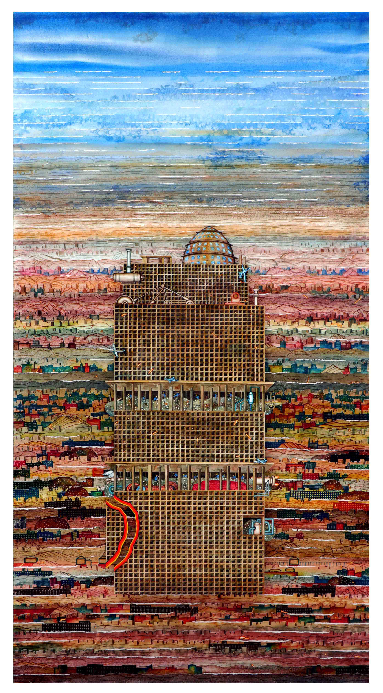
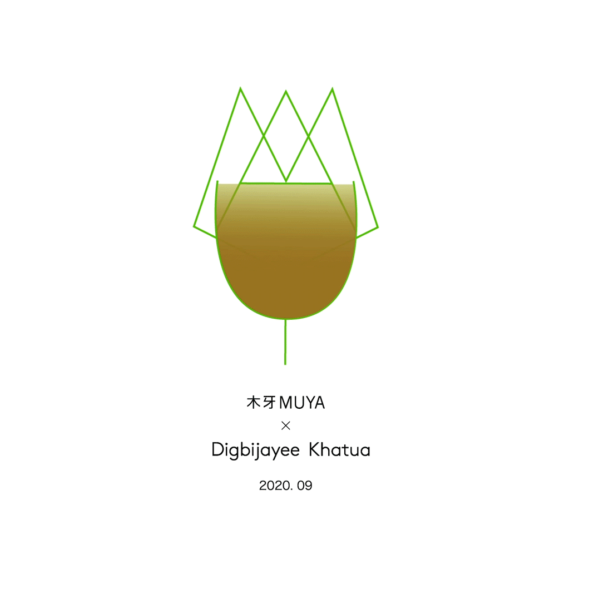
Which inspire your works most:
"Not one particular book or movies, I have influenced a long list of ideas and concepts as an artist, artisan, writer, and movies. I'm mostly influenced Indian traditional art, like miniature painting (Orisan Patta Paintings) and I have attracted people, ideas, and concepts that provide an alternate way of understanding life around me.
My practice as contemporary artists in India embrace traditional techniques of fiber art but use them to create unorthodox forms or address current social and political issues. Along these lines, then partially obscured the embroidered images with gestural painted brushstrokes.""
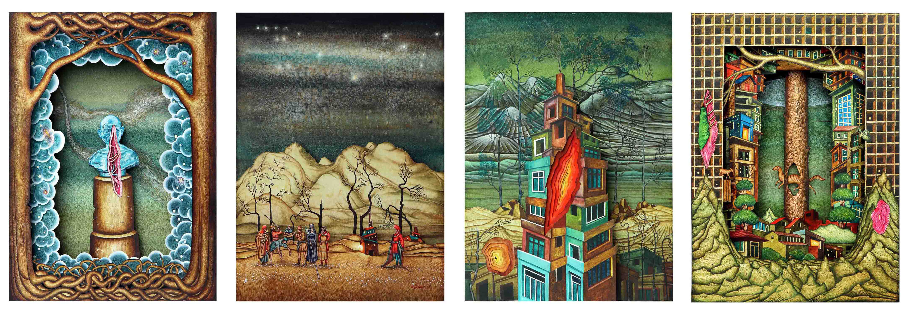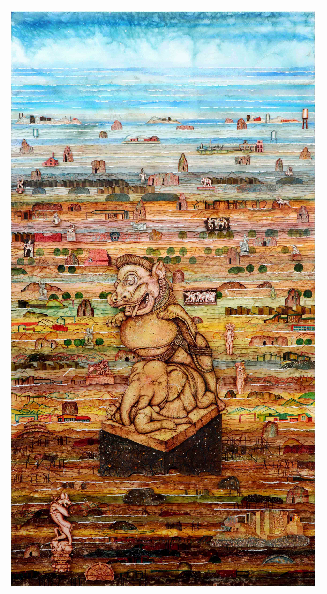
木牙微信订阅号